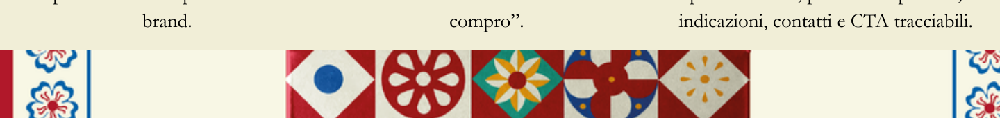
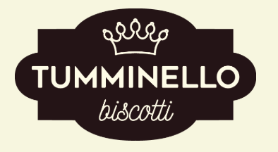
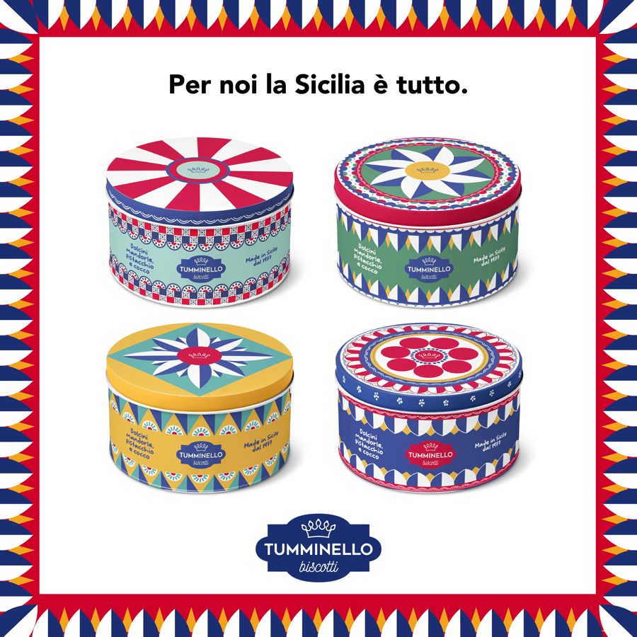
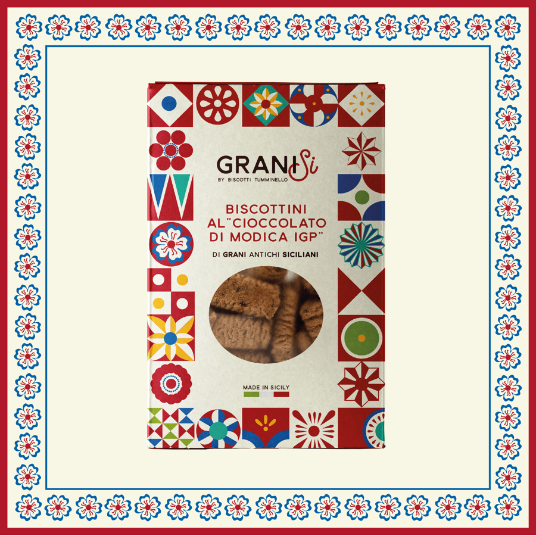
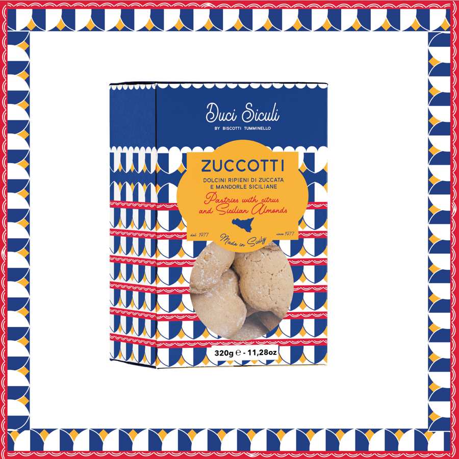

Castelbuono, Madonie · dal 1977
Biscotti da trovare, scegliere e tenere.
Tumminello unisce pasticceria artigianale siciliana, ingredienti del territorio e design contemporaneo. La strategia digitale trasforma questo valore in domanda qualificata, passaggio al punto vendita e relazione misurabile.
SEO/SEM, Store Locator, Boutique Digitale, CRM



73%
non conosce il brand: serve intercettare il bisogno prima della scelta.
Fulcro strategico
Rendere Tumminello più ricercabile, acquistabile e misurabile.
Acquisizione qualificata
Ponte omnichannel
Conversione premium
Relazione e retention
Demo search-led · La Sicilia da tenere